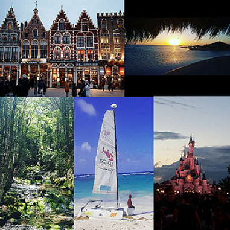

Présentation
Bienvenue sur ma page de présentation !
Je suis originaire de la France , de Paris plus précisément et je travaillais en tant que Responsable de credit. Ça fait 6 ans que je suis venue m'installer au Canada avec mon mari et nous avons un petit garçon de 2 ans qui demande beaucoup d'attention. Après notre installation, nous avons décidé de créer notre entreprise : RESO People Inc. , nous commercialisons des plateformes web modulable pour différents types d'organisation.
Mon CV
Mes études
J'ai toujours aimé les sciences, je me suis donc dirigée vers des études scientifiques et plus particulièrement en Physique-Chimie. Après mon diplôme de fin d'étude secondaire, spécialisé en Chimie industriel , j'ai fait une licence à l' Université Pierre et Marie Curie à Paris.
Mes expériences
J'ai un parcours assez atypique , puisque pendant et après mes études, je n'ai pas eu d'expérience professionnelle pertinente en Physique ou Chimie. Mais j'ai eu d'autres expériences professionnelles, qui sont répertoriées dans mon profil Linkedin .
Application
Mes applications préférées
Voici quelques applications qui sont pour moi des incontournables dans mon quotidien :
-
Instagram me permet de rester connectée à mes proches qui sont éloignés.
-
Flipboard Briefing pour rester informer de l'actualité dans le monde.
-
Youtube pour me divertire.
Voyage
J'ai un intérêt particulier pour les voyages, la découverte de nouvelles cultures et voir des beaux paysages... J'ai eu la chance de voyager dans différents pays du monde :
- Canada
- France
- Maroc
- Tunisie
- Ile maurice
- Italie
- Espagne
- Maldive
- Portugal
- Angleterre
- Belgique